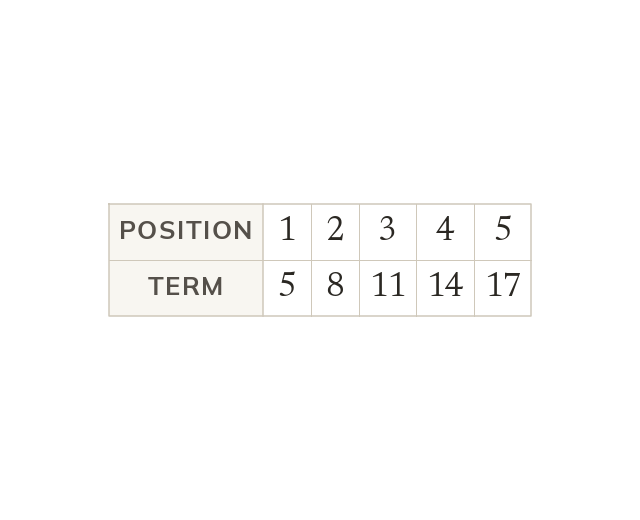

Two kinds of rule
A term-to-term rule gets each term from the one before. The nth term gives any term straight from its position.
A term-to-term rule gets each term from the one before, so the terms come in order. A position-to-term rule, the nth term, gives any term straight from its position.